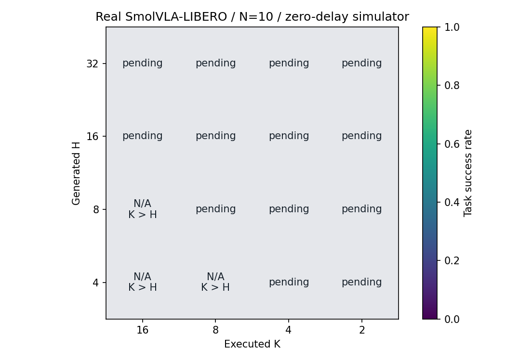

상태: running / prior_diagnostics. 갱신 UTC: 2026-11-17T02:55:03.959823+00:00.
Closed-loop 완료 0/78. SmolVLA-LIBERO cpu / float32, N=10. PIM 측정이 아닙니다. cpu_call_* 필드는 이전 버전과 호환되는 이름이며 실제 장치는 manifest의 device를 확인합니다. CUDA는 stage 경계에서 동기화해 측정합니다.
H=[32, 16, 8, 4], K=[16, 8, 4, 2]. K>H 3칸은 N/A이며 실패율에 넣지 않습니다. Action 반복·padding·추가 chunk 생성으로 K의 의미를 바꾸지 않습니다.

| H | K | applicable | completed | planned | successes | success_rate | wilson_ci95 | cpu_call_p50_ms | generation_utilization | errors_or_censored |
|---|---|---|---|---|---|---|---|---|---|---|
| 32 | 16 | True | 0 | 6 | 0 | None | [None, None] | None | None | 0 |
| 32 | 8 | True | 0 | 6 | 0 | None | [None, None] | None | None | 0 |
| 32 | 4 | True | 0 | 6 | 0 | None | [None, None] | None | None | 0 |
| 32 | 2 | True | 0 | 6 | 0 | None | [None, None] | None | None | 0 |
| 16 | 16 | True | 0 | 6 | 0 | None | [None, None] | None | None | 0 |
| 16 | 8 | True | 0 | 6 | 0 | None | [None, None] | None | None | 0 |
| 16 | 4 | True | 0 | 6 | 0 | None | [None, None] | None | None | 0 |
| 16 | 2 | True | 0 | 6 | 0 | None | [None, None] | None | None | 0 |
| 8 | 16 | False | 0 | 0 | 0 | None | [None, None] | None | None | 0 |
| 8 | 8 | True | 0 | 6 | 0 | None | [None, None] | None | None | 0 |
| 8 | 4 | True | 0 | 6 | 0 | None | [None, None] | None | None | 0 |
| 8 | 2 | True | 0 | 6 | 0 | None | [None, None] | None | None | 0 |
| 4 | 16 | False | 0 | 0 | 0 | None | [None, None] | None | None | 0 |
| 4 | 8 | False | 0 | 0 | 0 | None | [None, None] | None | None | 0 |
| 4 | 4 | True | 0 | 6 | 0 | None | [None, None] | None | None | 0 |
| 4 | 2 | True | 0 | 6 | 0 | None | [None, None] | None | None | 0 |
같은 3 task × 2 initial states를 새로 실행합니다. 이전 batch 결과를 복사하지 않습니다. Simulator는 추론 중 정지하므로 제어 품질 평가입니다. Short H는 재학습하지 않은 조건입니다. 작은 표본의 최대 성공률을 최적 설정으로 확정하지 않습니다. SmolVLA causal attention의 공통 prefix 성질은 GR00T와 다를 수 있습니다.
| prior_condition | method | post_steps | cases | expert_nmse | teacher_nmse | gripper_accuracy |
|---|---|---|---|---|---|---|
| arrival_rgb_arrival_state | continue_intermediate | 2 | 10 | 0.59597 | 0 | 0.75 |
| arrival_rgb_arrival_state | fresh_split_identity | 2 | 10 | 0.59597 | 0 | 0.75 |
| arrival_rgb_arrival_state | prior_unmodified | 0 | 10 | 0.59597 | 0 | 0.75 |
| arrival_rgb_arrival_state | renoise_independent_noise | 2 | 10 | 0.6456 | 0.036951 | 0.75 |
| arrival_rgb_arrival_state | renoise_original_noise | 2 | 10 | 0.66714 | 0.010108 | 0.75 |
| arrival_rgb_predicted_state | continue_intermediate | 2 | 10 | 0.62236 | 0.0077222 | 0.75 |
| arrival_rgb_predicted_state | prior_unmodified | 0 | 10 | 0.62659 | 0.0099779 | 0.75 |
| arrival_rgb_predicted_state | renoise_independent_noise | 2 | 10 | 0.67691 | 0.044436 | 0.75 |
| arrival_rgb_predicted_state | renoise_original_noise | 2 | 10 | 0.70332 | 0.024952 | 0.75 |
| none | fresh_few | 2 | 10 | 0.4615 | 0.039828 | 0.75 |
| none | fresh_full | 10 | 10 | 0.59597 | 0 | 0.75 |
| stale_rgb_arrival_state | continue_intermediate | 2 | 10 | 0.60479 | 0.11481 | 0.7 |
| stale_rgb_arrival_state | prior_unmodified | 0 | 10 | 0.60481 | 0.1207 | 0.7 |
| stale_rgb_arrival_state | renoise_independent_noise | 2 | 10 | 0.65111 | 0.15162 | 0.7 |
| stale_rgb_arrival_state | renoise_original_noise | 2 | 10 | 0.6695 | 0.12376 | 0.7 |
| stale_rgb_predicted_state | continue_intermediate | 2 | 10 | 0.61236 | 0.10688 | 0.725 |
| stale_rgb_predicted_state | prior_unmodified | 0 | 10 | 0.61574 | 0.11427 | 0.725 |
| stale_rgb_predicted_state | renoise_independent_noise | 2 | 10 | 0.66236 | 0.14421 | 0.725 |
| stale_rgb_predicted_state | renoise_original_noise | 2 | 10 | 0.6858 | 0.12202 | 0.725 |
| stale_rgb_stale_state | continue_intermediate | 2 | 10 | 0.6633 | 0.143 | 0.7 |
| stale_rgb_stale_state | prior_unmodified | 0 | 10 | 0.66951 | 0.15606 | 0.7 |
| stale_rgb_stale_state | renoise_independent_noise | 2 | 10 | 0.71529 | 0.18086 | 0.7 |
| stale_rgb_stale_state | renoise_original_noise | 2 | 10 | 0.74053 | 0.16229 | 0.7 |
| contrast | metric | cases | episodes | mean_delta | ci95 |
|---|---|---|---|---|---|
| replace_RGB_at_actual_state | expert_nmse | 10 | 3 | -0.00052802 | [-0.0188530832529068, 0.009211848179499308] |
| replace_RGB_at_actual_state | teacher_nmse | 10 | 3 | -0.10962 | [-0.17349276365712285, -0.005434525354454915] |
| replace_RGB_at_predicted_state | expert_nmse | 10 | 3 | 0.017175 | [0.013319611549377441, 0.020654987543821335] |
| replace_RGB_at_predicted_state | teacher_nmse | 10 | 3 | -0.095796 | [-0.17806902093191943, -0.0007979441434144974] |
| replace_state_at_stale_RGB | expert_nmse | 10 | 3 | -0.023526 | [-0.0864240328470866, 0.048721954226493835] |
| replace_state_at_stale_RGB | teacher_nmse | 10 | 3 | -0.0024991 | [-0.04452419622490803, 0.03985512116923928] |
| independent_noise_same_observation | expert_nmse | 10 | 3 | -0.024224 | [-0.05755409598350525, 0.002688039094209671] |
| independent_noise_same_observation | teacher_nmse | 10 | 3 | 0.026975 | [0.025652822572737932, 0.027663896636416514] |
| self_renoise_vs_original_fresh | expert_nmse | 10 | 3 | 0.073267 | [0.05227414891123772, 0.09509328007698059] |
| self_renoise_vs_original_fresh | teacher_nmse | 10 | 3 | 0.010359 | [0.00785070052370429, 0.013127267205466827] |
| forecast_renoise_vs_fresh_2step | expert_nmse | 10 | 3 | 0.23669 | [0.11276070028543472, 0.3247581322987874] |
| forecast_renoise_vs_fresh_2step | teacher_nmse | 10 | 3 | 0.08199 | [-0.0282689252247413, 0.1902162985255321] |
| forecast_continue_vs_renoise | expert_nmse | 10 | 3 | -0.076251 | [-0.10854463775952657, -0.048078831285238266] |
| forecast_continue_vs_renoise | teacher_nmse | 10 | 3 | -0.015746 | [-0.024289102603991825, -0.009681789437308908] |
차이는 앞 조건−뒤 조건이며 NMSE는 음수면 앞 조건이 유리합니다. 독립 episode 단위 paired bootstrap이며, 3 episode 미만이면 CI를 표시하지 않습니다. 2-step 조건 외에 4/8-step 비교는 prior_diagnostics_summary.json, grasp 직전/직후 및 이동 구간별 결과는 prior_diagnostics_by_phase.json에 있습니다.
renoise_original_noise: 기존 방식. 완성 prior와 원래 noise를 섞어 중간 flow time에서 다시 시작합니다.renoise_independent_noise: 다른 noise로 같은 방식을 반복하여 noise와 prior의 상관 영향을 분리합니다.continue_intermediate: 완성 action을 다시 섞지 않고 실제 중간 latent를 이어 계산합니다.fresh_split_identity: 같은 관측에서 중간 latent를 이어 계산했을 때 원래 full 결과와 일치해야 합니다.이 진단은 미래 좌표에서 feature를 생성하는 모델을 구현한 실험이 아닙니다. 정답 미래 RGB의 효용을 먼저 측정하는 oracle 조건을 포함합니다. 좌표만으로 미래 wrist RGB가 결정되지는 않으며, 미래 camera pose·scene geometry·가림을 다룰 표현이 필요합니다. Offline action NMSE는 정밀 조작 성공률이 아닙니다.
원자료: closed_loop.jsonl, prior trials, status, manifest, 오류. GIF는 replays/에 저장합니다. 오류/시간 예산 중단은 task 실패와 분리합니다.